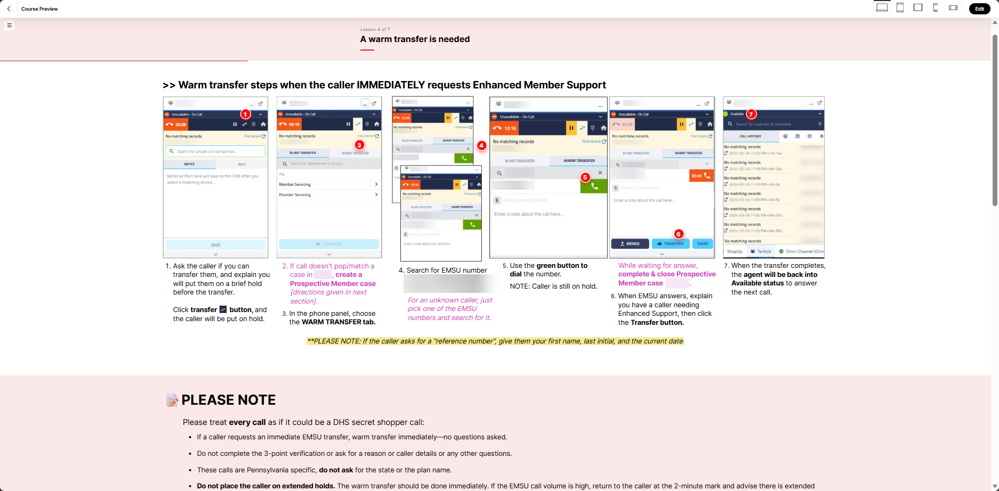
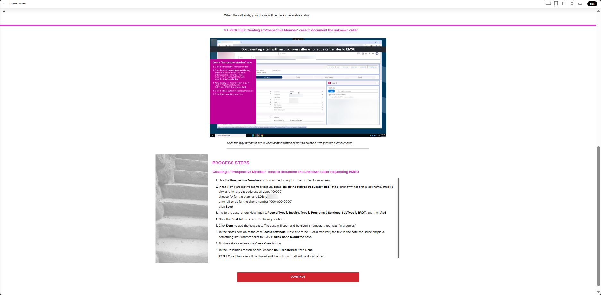

Problem
A recurring call type for a healthcare BPO client gets secret-shopped by external auditors: if a caller requests a specific high-risk transfer, the agent must send them immediately, no questions asked, a deliberate exception to standard verification.
Multiple versions of this training had already shipped. Agents kept failing anyway.
Analysis
What the data showed
Delivery Ops's audit data, 172 audits, broke the failures into two groups.
Transfer-related fails
- 27.3%Dropped the call mid-transfer or cold transferred instead of warm transferring
- 20.2%Transferred to the wrong department
- 9.9%Left the caller on hold too long searching for the transfer number
Other common fails
- 38.4%Asked verification questions before transferring, the exact check this call type skips
- 9.3%Gave the wrong public-facing number, buried in a knowledge base table under the wrong heading
Instructional design analysis
Opening the module made clear that wasn't the real problem:
- Transfer steps lived in a single static image referencing a documentation step the learner hadn't seen yet, out of order
- Documentation itself, two distinct tasks, was one video with on-screen text covering a third of the frame, then a redundant static recap in different formatting than the transfer section
- The transfer and documentation steps had no knowledge checks of their own at all
- The full module's final assessment tested recall of context, not the behaviors being audited
- Headers, colors, and callouts were inconsistent screen to screen
Beyond format, the ask itself was flawed: no one references an eLearning module mid-call. The numbers needed to come out entirely, not just get corrected, cutting screenshot risk and making the lesson evergreen.


Design Decisions
Here's what I built to fix it. The full lesson was restructured around Recognize, Respond, Implications; this excerpt covers the transfer and documentation portion of it.
Shown in this excerpt
- Static screenshots of the three-part call handling processes replaced with short video demos, each followed by an interactive carousel, turning passive viewing into active engagement
- Three knowledge checks introduced for a section that previously had none, added to the end of the call handling and documentation section for retention: multiple choice and true/false on correct transfer practices, sequencing and matching on documentation steps
- Consistent formatting applied across every screen
Other design decisions, full module, not shown here
- Additional visuals added to reinforce verification-question guidance, addressing the 38.4% failure point
- Phone numbers removed entirely, correct-number guidance addressed through a "use with caution" carousel marking up the knowledge base article to flag what's reliable and what isn't, addressing the 9.3% failure point
- A flip-tile interaction built on the current failure-rate data to drive home implications and common missteps to avoid
- Full module's final assessment updated to replace context-recall questions with ones that test the critical behaviors directly
- A VILT activity built on a real failed-audit recording, used as a spot-the-failure exercise
- Full version of the embedded three-part video segments, with intro and outro, published separately for use as a just-in-time reference
Resolution
Early feedback has been strongly positive. The next audit cycle, expected within a few weeks, will confirm whether the 27.3%, 20.2%, and 9.9% rates this excerpt targets actually moved.
Reflection
A redesigned module only closes part of the gap. I found the Teams-posted flyer, agents' backup source for callback numbers, still has outdated versions circulating. I flagged it to Delivery Ops: even perfect retention won't move the failure rate if agents can still land on a stale flyer through a channel the training doesn't control.